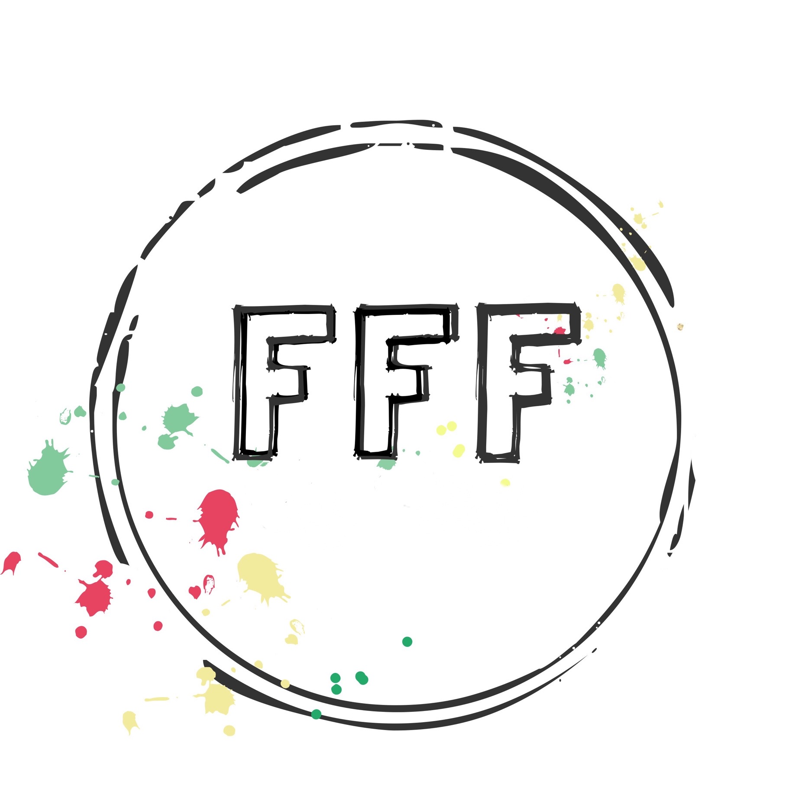
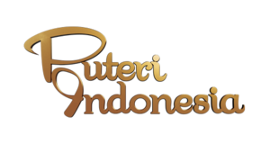
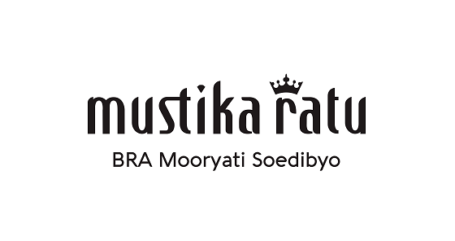
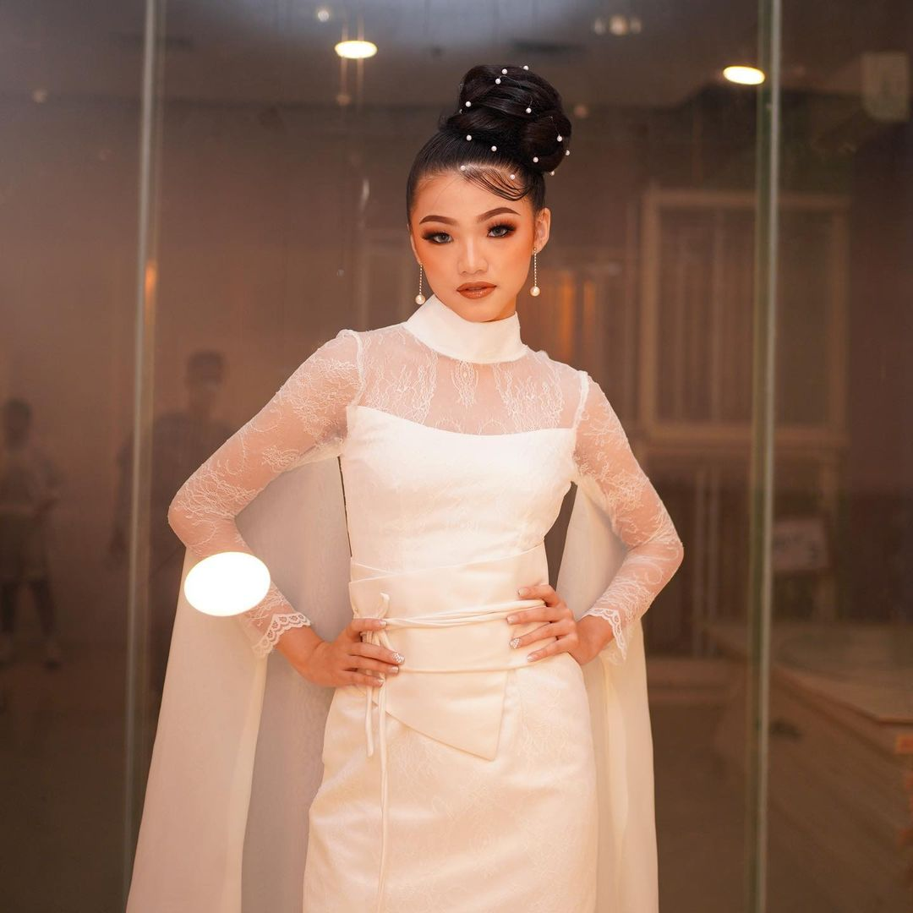
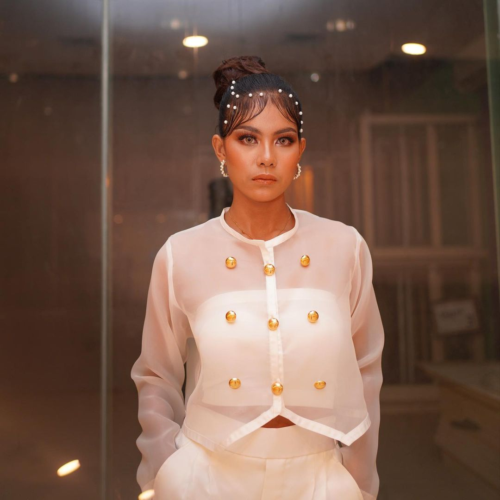
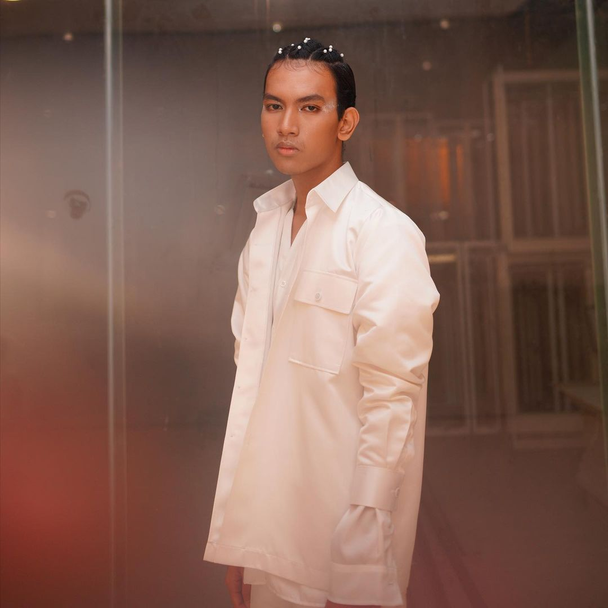
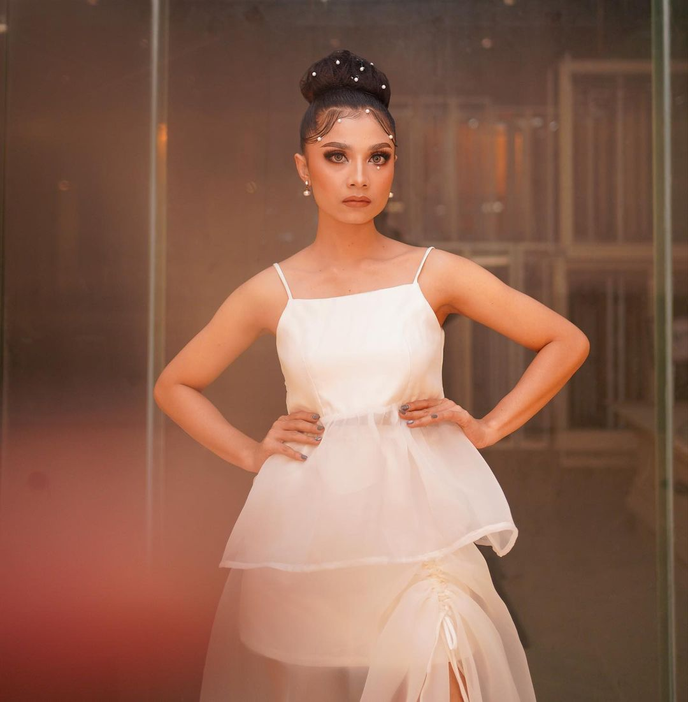
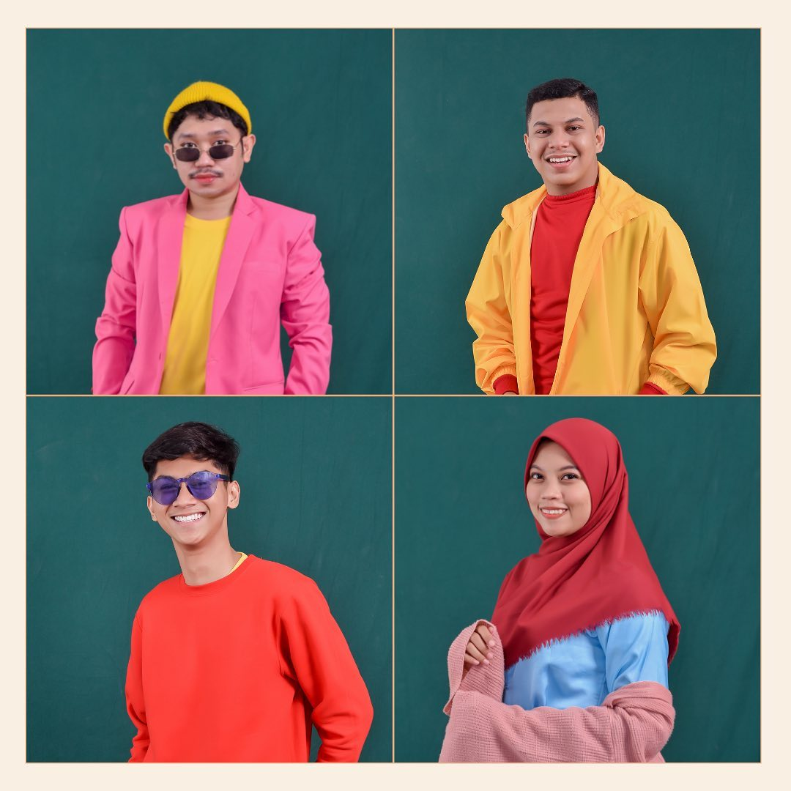
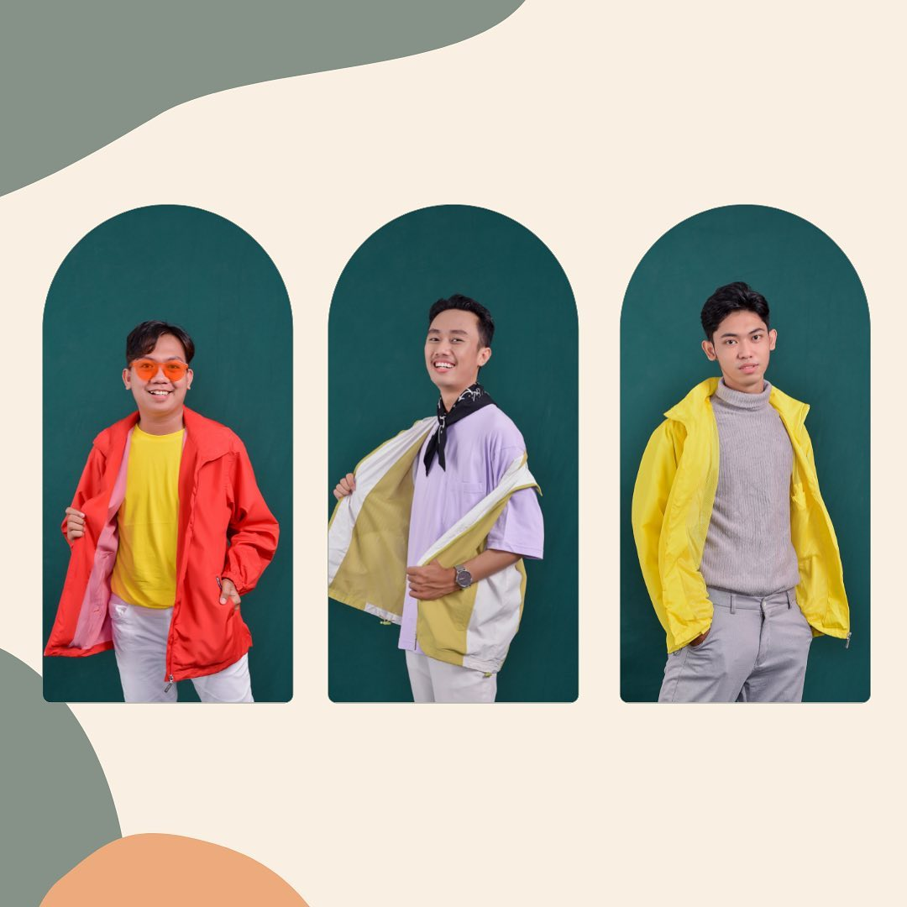
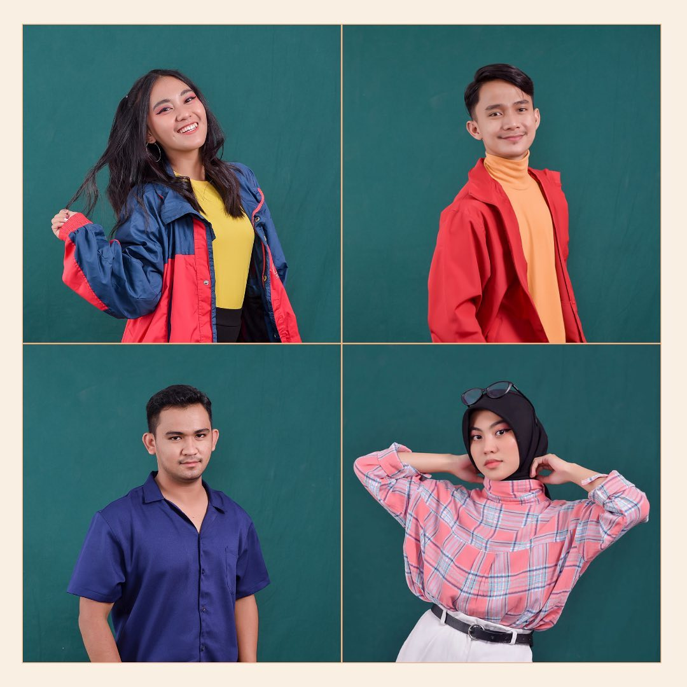

About Us
Palu Fashion Figure 2022 "The Pearl Of Khatulisiwa"
Alara Production adalah sebuah organized yang berdiri pada tahun 2020 dan berisikan orang orang yang sudah berpengalaman dalam membuat event besar yang berasal dari Genre Sulteng. Alara sendiri memiliki arti membuat hal hal yang indah. Maka berdasarkan arti dari alara sendiri harapannya agar Alara production bisa membuat hal hal yang indah dan menarik pada acara Palu Fashion Figure. PFF adalah sebuat event yang mewadahi desainer lokal Sulawesi Tengah untuk menampilkan karya mereka menggunakan model dari Alara Production. Palu Fashion Figure sudah ada sejak tahun 2016, Namun ditahun 2018 PFF atau Palu Fashion Figure sudah tidak terlaksanakan. Lalu pada tahun 2020 Alara production mengambil alih event tersebut agar bisa terlaksana kembali dan mempromosikan desainer lokal yang ada di Sulawesi Tengah
Support By

FFF BY Ferry
FFF BY Ferry Febry Fabry adalah seorang desainer asal kota palu dan sebagai satu satunya desainer dikota palu yang pernah bersekolah di POPPY DHARSONO menyelesaikan studinya dan hingga saat ini menghasilkan karya karya yang luar biasa dan sudah terpakai oleh beberapa artis serta brand terkenal

Puteri Indonesia
Puteri Indonesia adalah kontes kecantikan yang sudah diselenggarakan sejak tahun 1992 oleh yayasan puteri Indonesia. Tahun 2022 Organized by Alara production memegang lisensi Puteri Indonesia Sulawesi Tengah 2023 dan telah menyelenggarakan pemilihan tersebut bulan Desember 2022

Mustika Ratu Indonesia
Mustika Ratu merupakan Pioneer dari Yayasan Puteri Indonesia sebagai pelaksana acara pemilihan Puteri Indonesia yang merupakan acara event kecantikan terbesar di Indonesia




Icon Palu Fashion Figure Alara Production 2022
Our Team
Members of Alara Production

CEO, Secretary, Treasure & Public Relation

Event Conceptor
